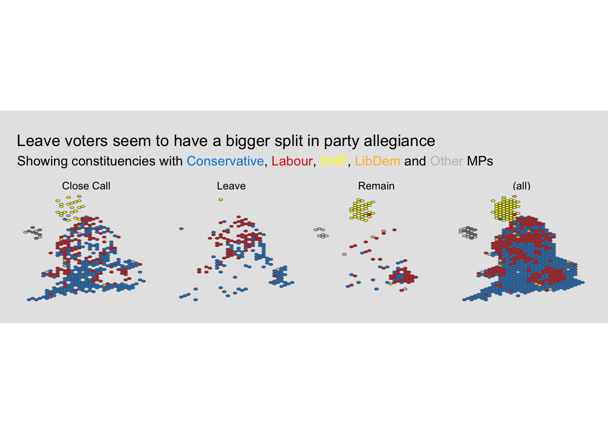

</>
library(dplyr)
library(forcats)
library(ggiraph)
library(glue)
library(ggplot2)
library(ggtext)
library(parlitools)
library(scales)
map_details <- west_hex_map
sf::st_crs(map_details) = 4326
data_brexit <- leave_votes_west |>
rename(`Leave Vote` = figure_to_use) |>
mutate(
`Party of MP` = as_factor(party_2016),
`Party of MP` =
recode(
`Party of MP`,
`Scottish National Party` = "SNP",
`Liberal Democrat` = "LibDem"
),
`Party of MP` = fct_lump(
`Party of MP`,
n = 5,
other_level = "Other"
)
) |>
left_join(
map_details,
by = c("ons_const_id" = "gss_code")
) |>
mutate(
constituency = if_else(
is.na(constituency_name.x),
constituency_name.y,
constituency_name.x
),
vote_status = case_when(
(`Leave Vote` >= 0) & (`Leave Vote` <= 0.4) ~ "Remain",
(`Leave Vote` > 0.4) & (`Leave Vote` <= 0.6) ~ "Close Call",
(`Leave Vote` > 0.6) & (`Leave Vote` <= 1) ~ "Leave",
TRUE ~ "Error"
),
vote_status = as_factor(vote_status),
vote_status = fct_relevel(vote_status, sort)
) |>
select(constituency, `Leave Vote`, `Party of MP`, ons_const_id, vote_status, geometry)
html_text <- glue("<span>Showing constituencies with <span style='color:#0087DC;'>Conservative</span>, <span style='color:#DC241F;'>Labour</span>, <span style='color:#FFFF00;'>SNP</span>, <span style='color:#FDBB30;'>LibDem</span> and <span style='color:#AFAFAFAF;'>Other</span> MPs</span><br/>")
data_brexit |>
ggplot() +
geom_sf(
aes(
group = constituency,
geometry = geometry,
fill = `Party of MP`
),
size = 0.1
) +
scale_fill_manual(
values = c(
Conservative = "#0087DC",
Labour = "#DC241F",
SNP = "#FFFF00",
LibDem = "#FDBB30",
Other = "grey80"
)
) +
facet_grid(~vote_status, margins = TRUE, drop = TRUE) +
theme_void() +
labs(
title = "Leave voters seem to have a bigger split in party allegiance",
subtitle = html_text
) +
theme(
plot.title.position = "plot",
plot.subtitle = element_markdown(),
legend.position = "none",
plot.background = element_rect(
fill = "grey90",
colour = "grey90",
linewidth = 1
),
plot.margin = margin(0.5, 0.5, 0.5, 0.5, "cm")
)